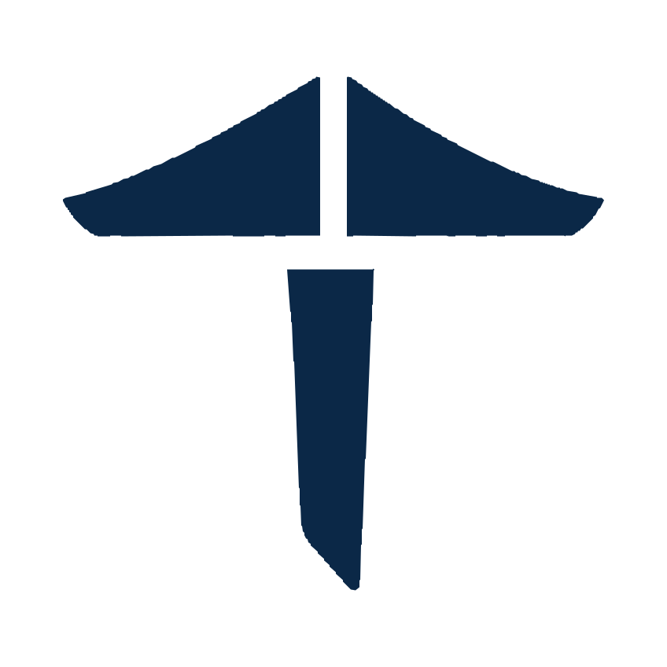

Home / Guidelines
GuidelinesHow the project is organised
Short by design. The rules below apply to every repository under the organization.
One organization for everything
- Infrastructure repositories keep their upstream names:
common,fab,buildtasks,inithooks,confconsole,tkldev,webmin,tklbam, andkeelfor the spec and the command. - Appliance repositories carry the
keel-prefix:keel-core,keel-wordpress,keel-odoo,keel-mariadb,keel-postgresql,keel-redis,keel-moodle,keel-ejabberd. - Under the composition architecture, a component shared by two or more images is an overlay in
common, shipped as its own package.keel-lamp,keel-lappandkeel-nginx-php-fastcgistop being appliances and are kept as the history of the organization.
Issues and decisions
- Issues live in the repository they concern.
- Work that spans repositories, the order of work and the decisions live in the tracker. The roadmap is tracker#46.
- Every direction taken is a numbered decision that says which earlier decisions it amends.
Tests and coverage
- Every repository has tests.
- Coverage is measured on every pull request in GitHub, and the check is required.
- At least 90 percent for any repository; 95 percent for code the project writes.
- A pull request that fails tests or the threshold cannot be merged.
- A phase of the roadmap is done only when it holds on a built image, not on a machine assembled by hand.
Conventions
- IPv6 in every example and default, for instance
[2001:db8:4b1::10]:443. - English in commits, code and documentation.
- History is never rewritten.
- System containers only.
Upstream
- Forks keep TurnKey Linux as an upstream remote.
- Changes are offered back upstream where they apply.
- What Keel packages that Debian lacks is offered to Debian, coordinating with those already packaging it.
The mark
The mark is a keel seen head on: two swept wings meeting at a mast, a waterline crossing where they meet, and a blade descending to a point. It is the part of a boat nobody sees and everything depends on. Every file is an export of the master drawing; a change to the mark is a new export, never an edit of an export.



Navy
#0B2847, the symbolWaterline
#0072C9, the band onlyGrey
#7F8D9D, the subtitle only
- Mark, vector, for a light background.
- Mark, vector, for a dark background.
- Mark, vector, one colour, where the waterline is a gap: a stencil or an engraving.
- Mark, 512 pixels, for somewhere that takes no vector.


Keep a clear space equal to the height of the waterline band on every side. Do not recolour the mark, do not add a second blue, and do not stretch it. The symbol alone reads down to 16 pixels; below 140 pixels of width, use the symbol rather than the horizontal lockup.